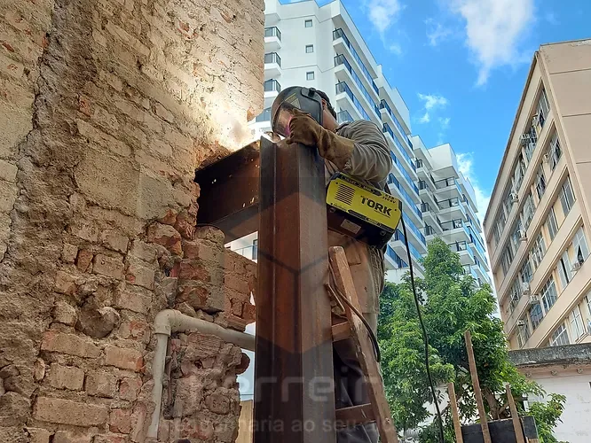
Reforço estrutural
Otávio Kelly
Tijuca, Rio de Janeiro · 2021
PORTFÓLIO
Obras realizadas pela Ferreira e áreas em que atuamos no Rio de Janeiro.
OBRAS REALIZADAS
Quando ainda não há foto da obra, a imagem é ilustrativa e está identificada no card.

Reforço estrutural
Tijuca, Rio de Janeiro · 2021
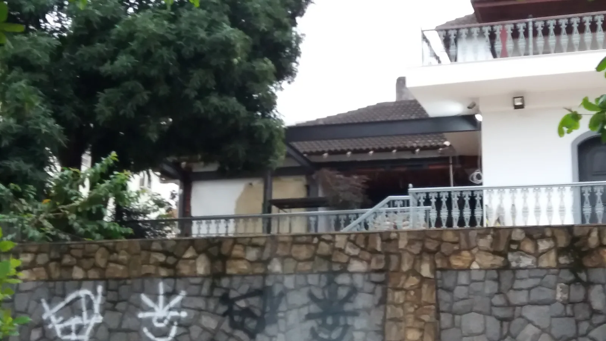
Reforço estrutural
Pechincha, Rio de Janeiro · 2020
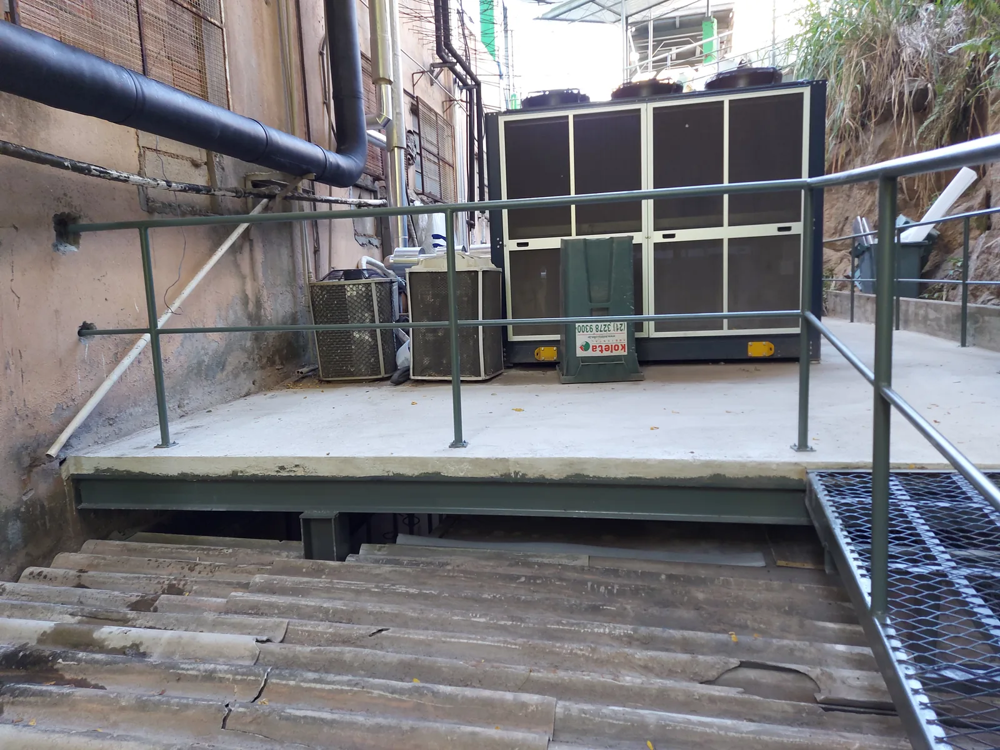
Reforço estrutural
Duque de Caxias, RJ · 2021
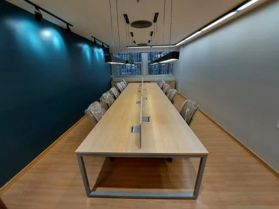
Imagem ilustrativaReforma corporativa
Centro, Rio de Janeiro
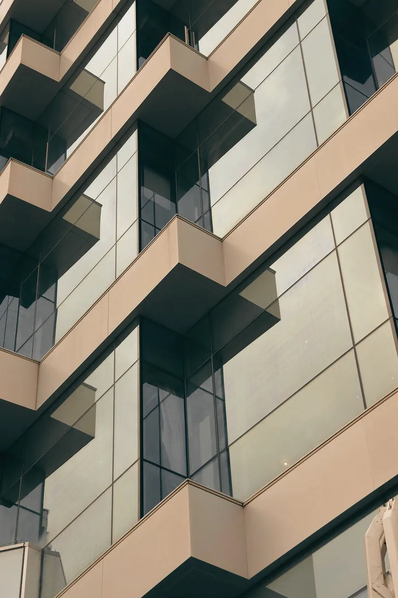
Imagem ilustrativaCoordenação e gerenciamento
Glória, Rio de Janeiro
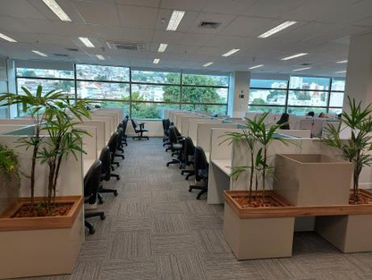
Imagem ilustrativaAmpliação de laboratório
Ilha do Fundão, Rio de Janeiro
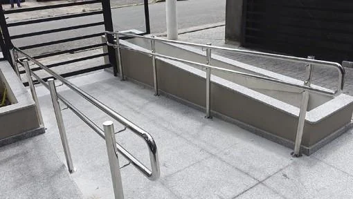
Imagem ilustrativaAcessibilidade e circulação
São Cristóvão, Rio de Janeiro
ÁREAS DE ATUAÇÃO
Tipos de trabalho da Ferreira apresentados com imagens ilustrativas. Não são registros de obras realizadas.
REGISTROS DE OBRA
Escolha uma categoria e abra uma obra para ver todas as fotos do projeto.
Novas fotos de obras serão publicadas em breve.
EXPERIÊNCIA NA PRÁTICA
Trabalhos realizados diretamente
ou em parceria com empresas
de engenharia.
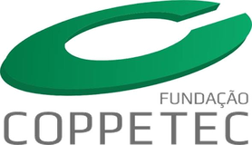
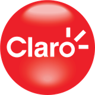
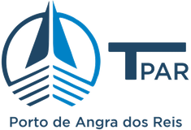
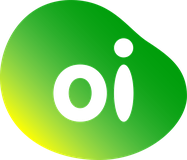
SEU PRÓXIMO PROJETO
Conte o que você tem em mente.
A conversa começa aqui.